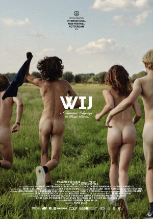

#11861 Wir - der Sommer, als wir unsere Röcke hoben und die Welt gegen die Wand fuhr
 
 IMDB-Wertung: 6.0 / 10
IMDB-Wertung: 6.0 / 10  Metascore: 0
Metascore: 0 
During a scorching summer in a Belgian-Dutch border village, eight teenagers play games of discovery to break the listless monotony. They challenge each other and themselves and pretty soon, their sexual curiosity starts to blur the lines between right and wrong. As innocence is crushed in depraved games and sexual exploitation, the teenagers soon turn into ruthless predators.
Jahr: 2018
Dauer: 100 Minuten
FSK: 18
Land: Niederlande Studio: EuroVideoTonspuren:
Untertitel:
Auflösung: 1080p (1920x720) Größe: 5652 MB
Genre: Drama
Regisseur: Rene Eller
Drehbuch: Rene Eller, Elvis Peeters
Soundtrack:
Darsteller:
- Axel Daeseleire als Martin - Father Thomas
- Joke Devynck als Patricia - Mother Liesl
- Pieter Embrechts als Father Simon
- Michael Pas als Guy - Boyfriend Mother Simon
- Gert Portael als Mrs. van Langendonck
- Barbara Sarafian als Vera - Mother Simon
- Karlijn Sileghem als Mother Thomas
- Tom Van Bauwel als Mr. van Langendonck
- Steven van Watermeulen als Biology Teacher
- Pauline Casteleyn als Liesl
- Aimé Claeys als Thomas
- Gaia Sofia Cozijn als Sarah
- Vincent de Boer als History Teacher
- Tom De Vreese als Dutch teacher
- Nick De Vucht als Resident DJ
- Laura Drosopoulos als Ena
- Gonny Gaakeer als Danielle - Mother Femke
- Tijmen Govaerts als Simon
- Mattijn Hartemink als Peter - Father Femke
- Filip Hellemans als Springer / jumper
- Maxime Jacobs als Ruth
- Lieselot Siddiki als Loesje
- Friso van der Werf als Jens
- Salomé van Grunsven als Femke
- Dominique Van Malder als Moped Salesman
- Vincent Van Sande als Frederik - Brother Thomas
- Christine van Stralen als Mother Ruth
- Folkert Verdoorn als Karl
- Thierry Wybauw als Perverte discoganger
Datei: X:\FSK18-Erotik\Wir - der Sommer, als wir unsere Röcke hoben und die Welt gegen die Wand fuhr (2018, FSK18, 1920x720).mkv seit 02.10.2019
Festplatte: FSK18
 Es gibt insgesamt 14 Filme in der Gruppe 'FSK18-Erotik'
Es gibt insgesamt 14 Filme in der Gruppe 'FSK18-Erotik'